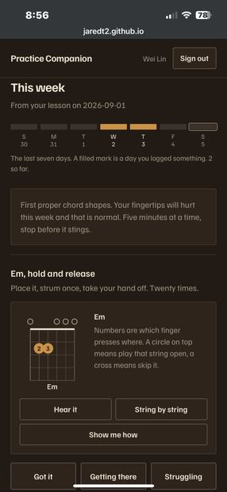
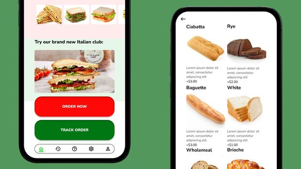
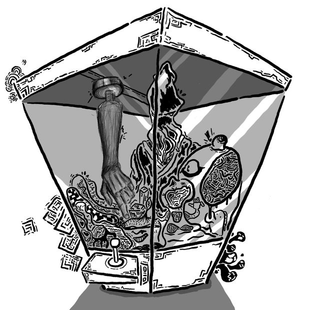

In progress
Practice Companion
Product designer and developer · 2026
A web app that carries a music lesson home with the student, so they can fix a chord shape without the teacher in the room.
For three years I taught seven complete beginners to play guitar and piano. Almost none of them quit during a lesson. They quit in the six days afterwards, when nobody was there to tell them what to do next.
I also draw — mostly food, usually turning into something it should not be. Both habits come from the same place: looking at something ordinary for long enough that it goes strange.

Product designer and developer · 2026
A web app that carries a music lesson home with the student, so they can fix a chord shape without the teacher in the room.

Product designer · 2024 · Google UX Design certificate project
A sandwich-ordering app built around a hard trade-off: fewer taps to order, without removing the customisation people actually cared about.

Illustrator · 2025 · Procreate
A fit check in the wrong desert. One figure, dressed for a winter he is not in, melting for the sake of style.

Illustrator · 2025 · Ink and Procreate
Eight pieces about food refusing to behave. Fast against slow, predator against prey, tradition against junk food.
Seven beginners with no prior musical training, taught alongside national service and full-time study. Every lesson plan built around what that student wanted to play. Two students arrived by referral.
Assembly and quality control on 200+ printed circuit boards per shift. Every board inspected by hand after each process stage.
Safety briefings and supervision for classes of ten or more children on night cycling trips and hikes. Four excursions, no injuries.
My degree is an odd hybrid. Electrical engineering underneath, communications and media studies on top. One semester on signal processing, the next on how people read an image. It turned out to be better preparation for design than either subject would have been alone.
I am partway through the Google UX Design certificate, which put method behind instincts I first picked up teaching.
The teaching is the part that matters most to how I work. You cannot bluff a beginner. If your explanation is bad, their hand goes to the wrong fret and you find out in four seconds. Three years of that is a reasonable substitute for a usability lab.
The drawing taught me the opposite lesson: that a series holds together through restraint, and that the most ordinary object in a room is usually the one worth looking at hardest.